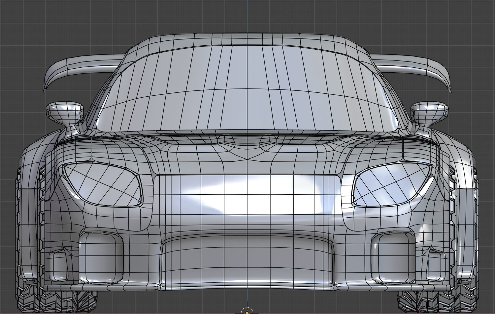
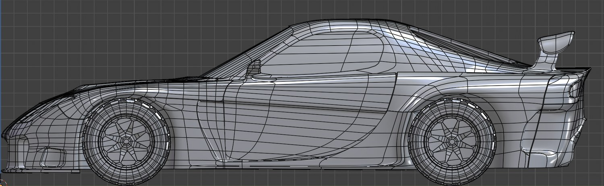
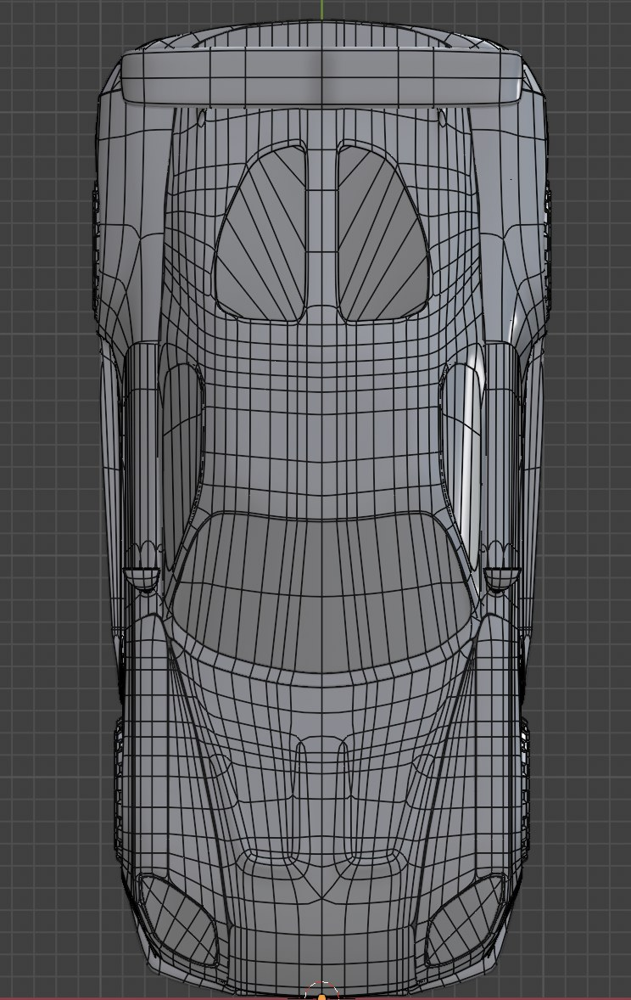

RX-7 VEILSIDE仕様
高校2年の夏休み、自主的に続けていた「1日1モデリングチャレンジ」の締めくくりとして作った3DCGモデルです。題材は、映画『ワイルド・スピード』に登場する“ハンのRX-7”（VEILSIDE仕様）。さらに、このモデルを動かして、映画『カーズ』冒頭のマックイーン登場シーンを再現した動画に仕立てました。
1日1モデリングチャレンジの、締めくくり
高校2年の夏休み、誰に言われたわけでもなく「1日1モデリングチャレンジ」を自分に課していました。毎日ひとつ、何かをモデリングして手を動かし続ける——その締めくくりに選んだのが、いちばん作りたかったこのRX-7です。さらに、ただ静止画で終わらせず、作ったモデルを実際に動かすところまでやり切りました。
はじめてBlenderに触れた初めてのモデリングがチュートリアルをなぞる学習だったのに対し、こちらは3面図を頼りに自力で形を起こした一台。毎日の積み重ねが、ここまでの規模に挑む土台になっていました。
“ハンのRX-7”を、再現する
題材に選んだのは、映画『ワイルド・スピード』シリーズに登場する“ハンのRX-7”。マツダ RX-7（FD3S）にVEILSIDEのエアロを組んだ、あの印象的な一台です。あくまで個人的な再現（非公式・ファン制作）であり、好きな車を自分の手で立体に起こしてみたい、という気持ちから作りました。
一枚の平面から、車一台へ
ネット上にあったRX-7 VEILSIDE仕様の3面図を下絵に、たった一枚の平面からスタート。ループカットと押し出しを繰り返し、面を貼り広げながら少しずつ車の形に近づけていきました。色分けはテクスチャではなく、マテリアルを部位ごとに切り替えているだけ（マテリアル7種）です。
正直に言えば、これはゲーム用に最適化したモデルではありません。三角面はおよそ58万。毎日モデリングを続ける中で、最適化より「とにかく好きな車を1台、最後まで形にする」ことを優先した習作です。それでも、3面図というリファレンスからここまでの曲面と情報量を立ち上げられたことは、当時の自分にとって大きな手応えでした。



映画『カーズ』の冒頭を、RX-7で
作ったモデルは、動かしてこそ。チャレンジの締めくくりとして、このRX-7を映画『カーズ』の冒頭——主人公マックイーンが暗闇から走り出していく、あの登場シーン——に当てはめて再現しました（カーズへのオマージュ／ファン制作です）。静止したモデルではなく、走る車として見せるところまで持っていった一本です。

タイヤが地面をグリップする仕掛け
動かす段でこだわったのが、タイヤの転がりです。車体全体を前進させる root ボーンのY軸方向の移動量を、タイヤ用ボーンの回転にコンストレイントで連動させました。進んだ距離に応じてタイヤがちょうど回るので、地面を滑らずにグリップして走っているように見えます。移動と回転を手付けで合わせるのではなく、移動量からタイヤの回転を自動で導く——シンプルなリグですが、走りの説得力がぐっと増しました。
root ボーンのY軸移動に、タイヤの回転をコンストレイントで連動（メイキング）。
- 公開
- 2021年8月17日
- 形式
- 3DCGモデル＋アニメーション
- 担当
- モデリング・マテリアル・アニメーション（個人制作）
- 題材・参考
- 『ワイルド・スピード』“ハンのRX-7”（VEILSIDE仕様）の再現／下絵はネット上の3面図／動画は映画『カーズ』冒頭の再現（いずれも非公式・ファン制作）
- マテリアル
- 7（テクスチャ無し・色分けのみ）
- 頂点数
- 292,026
- 三角面数
- 583,496
- ツール
- Blender